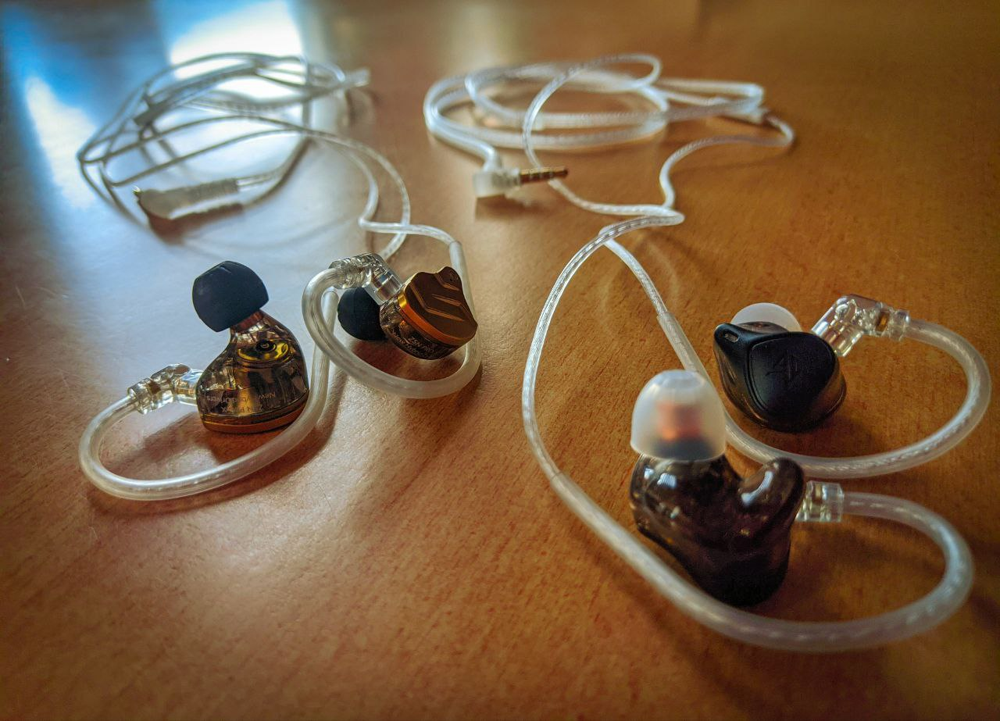
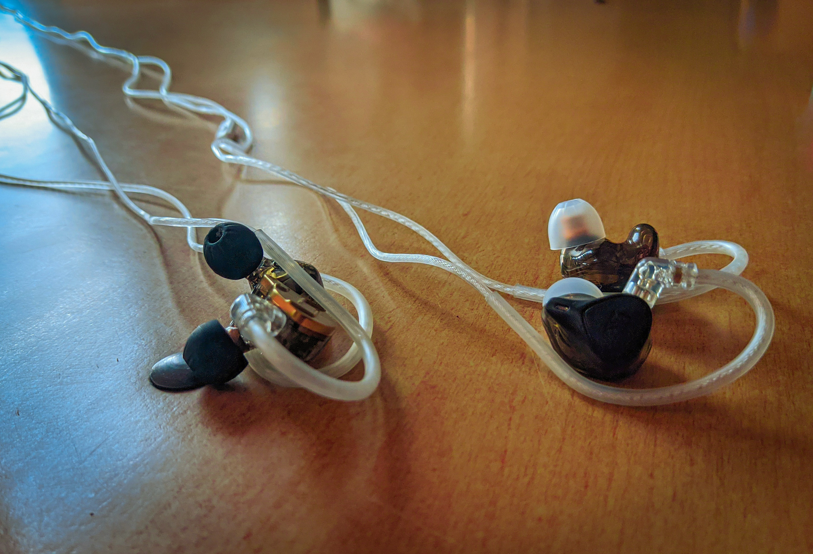

KZ ZSN Pro X oraz KZ ZEX Pro
Nazwy modeli rodem z Xiaomi...
Dzięki uprzejmości audiomagic.pl oraz naszej administracji, korzystając z możliwości wzięcia udziału w #kzbyaudiofilawka miałem okazję przez ostatnie dni wsłuchiwać się w powyższe modele. Poniżej obiecane kilka słów na ich temat.
Opakowanie i aspekt wizualny
...a pudełka wprost z Ikei.

Jak to zwykle bywa w przypadku KZ - proste, schludne opakowania o konstrukcji pudełka zapałek. Jakość nadruku oraz samego kartonu jest całkiem dobra. Jest po prostu tak, jak być powinno W obu przypadkach zestawy są podobne - poza samymi słuchawkami otrzymujemy również po 4 komplety gumek (w tym jeden już założony, 3 w innych rozmiarach) oraz kabel o długości 125cm. W tym przypadku do dyspozycji miałem kabel zarówno bez, jak i z mikrofonem. Zakończone one są kolejno jackiem oraz combo jackiem 3,5mm, z drugiej strony natomiast znajdziemy standardowe piny 0,75mm.
Budowa, jakość wykonania i wygoda


Obie pary słuchawek posiadają budowę charakterystyczną dla IEM-ów. Producent starał się jak najuniwersalniej dopasować model obudowy do ludzkiego ucha - nie są to jednak custom moldy, więc nie będą pasować każdemu. Obiektywnie patrząc - model ZEX ma krótszy kanał, przez co powstaje wrażenie mocniejszego wypełnienia uszu. Są one również wyraźnie lżejsze niż ZSN, do których wykończenia wykorzystano metalowe płytki - ZEXy są w całości wykonane z tworzywa. Mimo to, wygodniejsze wydawały się Pro X, zapewniają większą wentylację uszu, co umożliwia dłuższe pojedyncze sesje. Przez okres testowy nie zaobserwowałem żadnych odstępstw w kwestii jakości wykonania.
Brzmienie
Oh shit, here we go again…
Miałem okazję sprawdzić owe modele w kilku różnych zastosowaniach. Zacznę od tych najbardziej "cywilnych":
Słuchanie muzyki na codzień
(słuchawki zasilone były z iBasso DC02, CX31993 oraz zintegrowanych DACów telefonów)
Tutaj wychodzą skrajne różnice w obu modelach. Do muzyki ciężkiej pokroju metalu, punku czy rocka dużo lepiej sprawdzają się ZEXy, ze względu na uwydatnioną średnicę. Gitary brzmią żywo, naturalnie, wokal nie ginie w tle. Zajeżdża trochę odwróconą V-ką, jednak zachowane są sybilanty.
Model ZSN natomiast dużo lepiej odnajduje się w muzyce klubowej, szeroko pojętym hip-hopie oraz w utworach popularnych. Basu jest co niemiara - rzekłbym więc, że pasmo 50Hz wybija się zbyt bardzo ponad pozostałe. Tony średnie są na umiarkowanym, nie kłującym w uszy poziomie, natomiast skrajna góra wydaje się być lekko wycofana względem pozostałych pasm.

Odsłuch z instrumentów
(napędzane z systemu Sennheisera, Marshalla, Yamahy DGX660 i [zwłaszcza] Yamahy MG10XU)
Odkurzyłem moje wiosła. Ponownie potwierdza się reguła. ZEXy w sam raz do gitar, zarówno elektryka, jak i akustyka czy basu. Piano znacznie lepiej brzmi jednak na ZSN, choć tu górka przy 50Hz była uciążliwa. Brzmienie saksofonu również przyjemniej oddawały przetworniki z modelu Pro X.

Mix i livemix
(źródło stanowiły MG10XU, A&H SQ-6 oraz Ashly DigiMix18)
Krótko i na temat - ZEXy się do tego zwyczajnie nie nadają. ZSN nieco lepiej, dźwięk jest bardziej selektywny, wyraźnie słychać każdą częstotliwość. Scena również jest w nich szersza.
Mimo, iż przy miksowaniu na żywo drugi model sprawdził się nieźle, wciąż uważam, że nazywanie ich In-Ear Monitor to duże nadużycie. Żadna z obu par nie ma charakterystyki monitorowej, osobiście nie podjąłbym się miksowania nagrań z użyciem tego sprzętu.

Z informacji ogólnych, ZSN mają impedancję na poziomie 25Ohm, natomiast ZEX - 32Ohm. Słychać to przy zmianie między modelami, występuje wyraźna różnica poziomów.
Mikrofon
W tym przypadku… Jest.
I to właśnie jego największa zaleta. Żeby odpowiedzieć na szybki telefon podczas odsłuchu jest idealny, ale do prowadzenia wielogodzinnych rozmów raczej wybrałbym kabel bez niego. O jakichkolwiek nagraniach w dobrej jakości również nie ma mowy. Miły dodatek do telefonu, ale większość źródeł lepiej współpracuje z trójpolowym jackiem.
Podsumowanie
Nie zrozumcie mnie źle…
Przyznam szczerze, że nie jestem zwolennikiem słuchawek dokanałowych, zwłaszcza tych na kablu. Mając wybór zwykle sięgałem po konstrukcje wokółuszne - i na pewno prędko się to nie zmieni. O ile ZSN już znałem, tak ZEXy otworzyły mi oczy (a wręcz uszy) na to, że niekiedy warto spróbować czegoś innego, choćby dla odskoczni od tego samego, nudnego brzmienia co zawsze. ZSN są tym co lubię, więc mimo wszystko zrobiły na mnie większe wrażenie, lecz z obu par korzystało mi się nad wyraz przyjemnie.
Raz jeszcze dziękuję audiomagic.pl za możliwość przetestowania sprzętu i szczerze liczę na dalsze współprace w przyszłości 😃